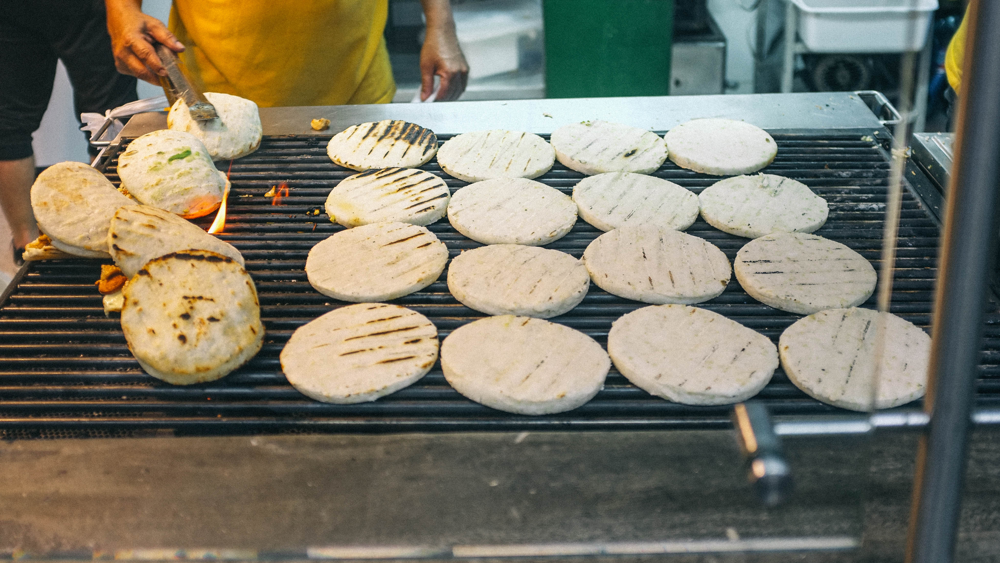

Colombia / Antioquia
Arepa antioqueña
A kernel-to-dough route: soften dehulled maize, grind a smooth dough, then roast it golden. This version follows Fundación Secretos para Contar’s Del campo a la mesa recipe.
Makes 10Overnight soak + cooking, grinding, and griddling; the source gives no exact cook time.
Ingredients
- 2 cups dried maíz trillado (dehulled maize)
- 3 L water for cooking the soaked grain, then drained
- Salt to taste
- Additional water to cover the grain while soaking
Method
- Cover the maize with water and soak overnight. Drain.
- Cook in the 3 L of fresh water until the grain is between hard and very soft: tender enough to grind, but not mushy. Drain and let cool.
- Grind finely into a smooth dough. Knead in salt. Divide into 10 and shape into rounds. We choose thin rounds, one of several Antioquian shapes described by Colombia’s Ministry of Culture; the Fundación recipe does not set a thickness.
- Roast on a hot cooking surface, turning so both sides become golden. A griddle or skillet is a practical home substitute. Serve plain.
At the finish
The source asks for a very smooth ground-grain dough and golden faces. It gives no fixed diameter or number of minutes on the griddle.
Recipe: Fundación Secretos para Contar, p. 92 ↗ · Shape option: Colombia Ministry of Culture, pp. 265–266 ↗